Log your way
Snap a photo, describe a meal, scan a barcode, or add a manual entry when that fits best.
Snap a photo, describe your meal, or scan a barcode. StayToned estimates the ingredients and macros for you — and every estimate stays editable. Track fat, carbs, and protein against daily targets that adapt to your goal.
Free to start with a trial week of AI logging. Barcode scanning and manual entry are always free.
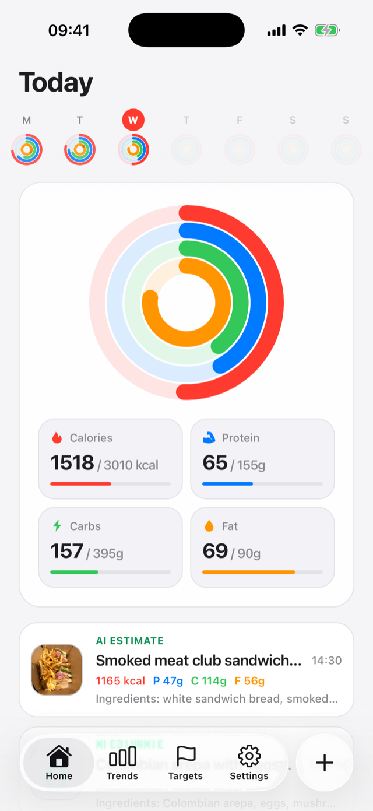
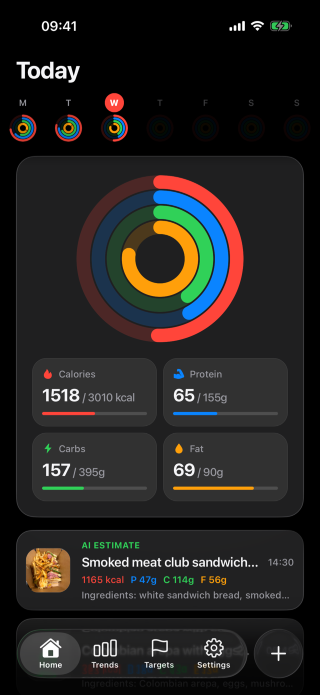
How to use it
Open the Targets tab and tap Calculate targets. StayToned estimates daily calories and macros from your profile, activity, and goal — or type your own numbers directly. Changes apply from today forward.
Tap the + button and pick how to log: take a photo, describe the meal in words, scan a barcode, or add a manual entry with your own ingredients.
AI breaks your meal into ingredients with quantities and macros. Everything is editable — adjust a portion, swap an ingredient, or fix a number, and the totals recalculate instantly.
The Home screen shows live progress rings for calories, protein, carbs, and fat, plus the week at a glance. Tap any macro for what it is, your goal, and how much is left today.
The Trends tab charts your macros, nutrients like fiber and sodium, energy balance, and weight over weeks, months, or a year — with your goal line drawn right on the chart.
See it in action
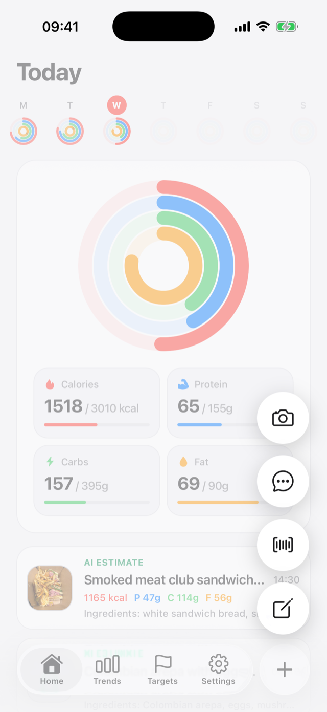
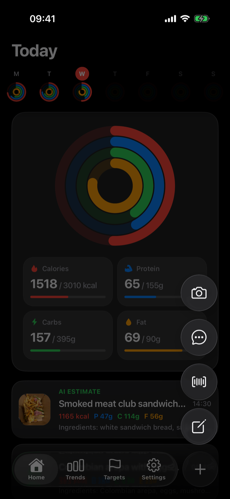
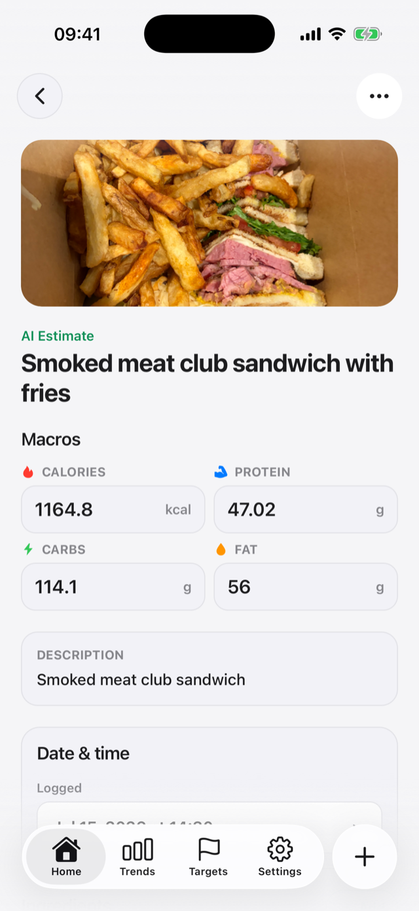
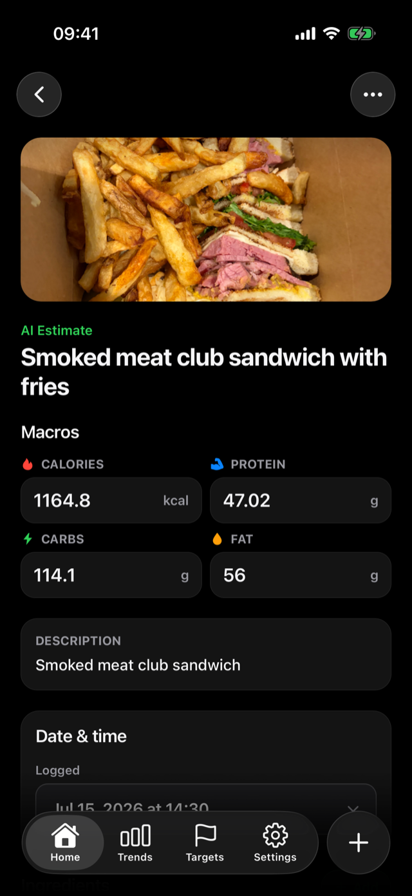
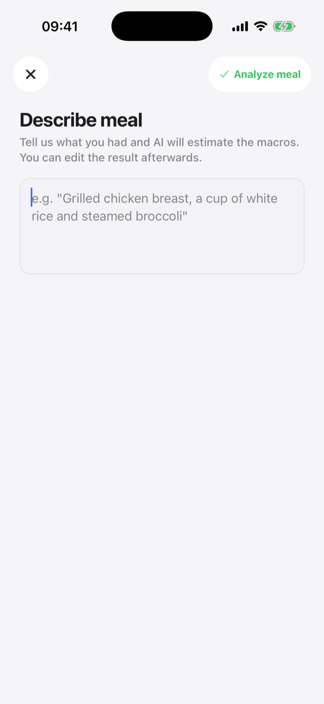
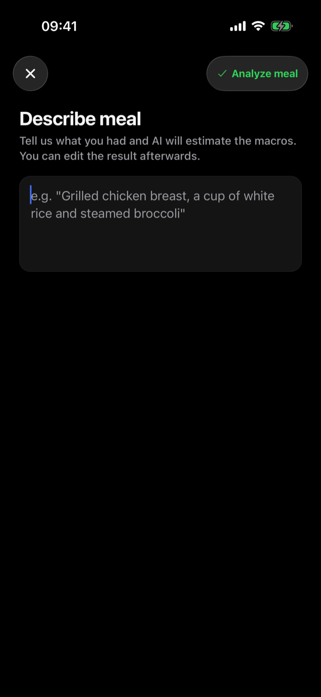
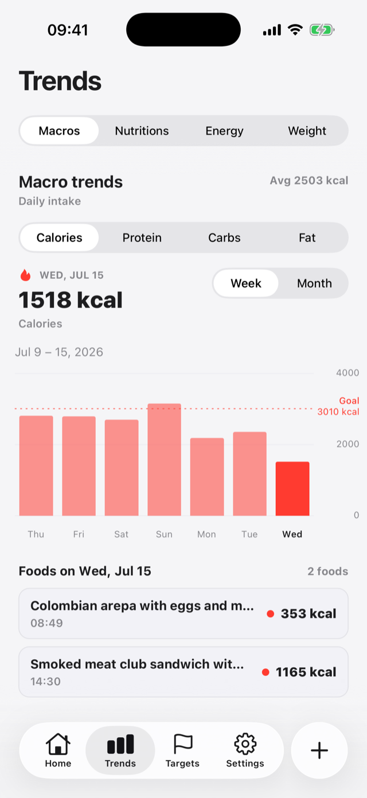
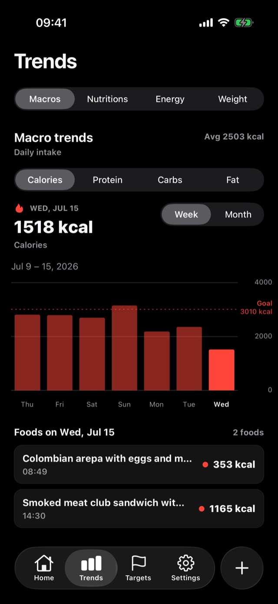
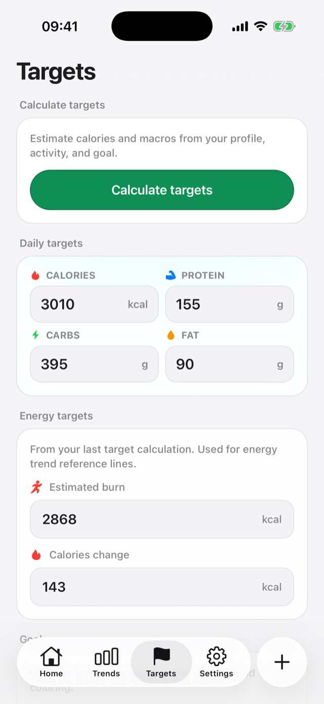
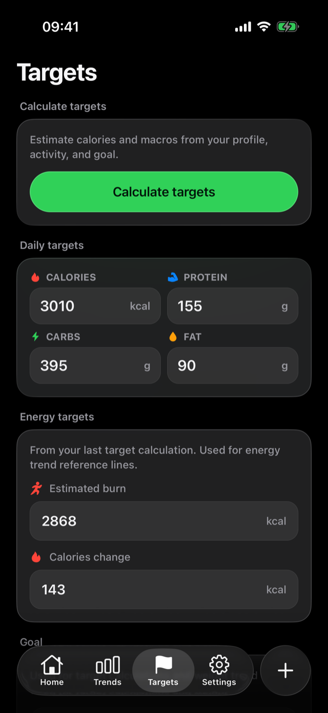
Everything it does
Snap a photo, describe a meal, scan a barcode, or add a manual entry when that fits best.
Review AI-generated ingredient and macro estimates before saving, then adjust anything that looks off.
Full nutrition facts on every entry — fiber, sugars, sodium, saturated fat, vitamins, and minerals — not just calories and macros.
Grow any meal one ingredient at a time: snap it, describe it, or scan it, and AI fills in the nutrition for you.
Macros, nutrients, energy balance, and weight over time — with your goal drawn on every chart.
Check your rings from your wrist or home screen, and log meals by voice from the watch.
Optionally connect Apple Health or Health Connect for weight and energy — you choose what syncs.
Send a meal to a friend as a link. They review the photo, ingredients, and macros before adding it.
Optional meal-logging reminders at the times you pick, so a busy day doesn't become a blank day.
Start logging immediately. Create an account later and your local entries move to the cloud.
Analytics stay privacy-safe, and you can request export or deletion from inside the app.
Questions
When you snap or upload a meal photo, AI identifies the ingredients, estimates quantities, and calculates fat, carbs, protein, and calories. The result is saved as an editable entry — you can correct any ingredient or amount and the totals recalculate.
They are estimates, not measurements. AI does well on common meals and portions, but you should treat every number as a starting point and edit anything that looks off. StayToned is not a medical device and its values should not be treated as medical measurements or advice.
Yes. Every entry carries full nutrition facts — dietary fiber, sugars, sodium, saturated and unsaturated fats, cholesterol, and a wide range of vitamins and minerals. Daily summaries surface nutrients like fiber and sugars alongside your macros, and the Trends tab charts them over time.
Yes. When editing any meal, tap "Add ingredient" and choose how to add it: take a photo, describe it in words, scan its barcode, or enter it manually. AI estimates the quantity and nutrition for photo and description entries, and everything stays editable before you save.
Barcode scanning, manual entry, targets, trends, and progress tracking are free. AI photo and description logging are part of StayToned Pro, with a free trial week when you start so you can try everything. Pro is an auto-renewing subscription through the App Store or Google Play.
No. You can start logging right away in local mode. If you later sign in with Apple, Google, or email, your local entries are migrated to your account so they sync across devices.
Yes, optionally. You can connect Apple Health on iPhone or Health Connect on Android to sync weight and energy data for the energy-balance and weight trends. Health sync is off until you turn it on, and you can revoke it from the app at any time.
Yes. The watch app shows your daily macro rings and a 7-day graph, and supports logging meals by voice from your wrist. There are also iPhone home screen and lock screen widgets for today's progress.
Open any meal, tap the options menu, and choose "Share meal". StayToned creates a private link you can send to a friend. When they open it, they review the meal — photo, ingredients, macros — before adding a copy to their own log.
Your meal photos and entries are stored in your account and are yours. Analytics, if enabled, never include photos, raw nutrition values, or health details. You can request a data export or deletion from inside the app. Read the full privacy policy for details.
Download StayToned, snap your next meal, and let AI handle the math.